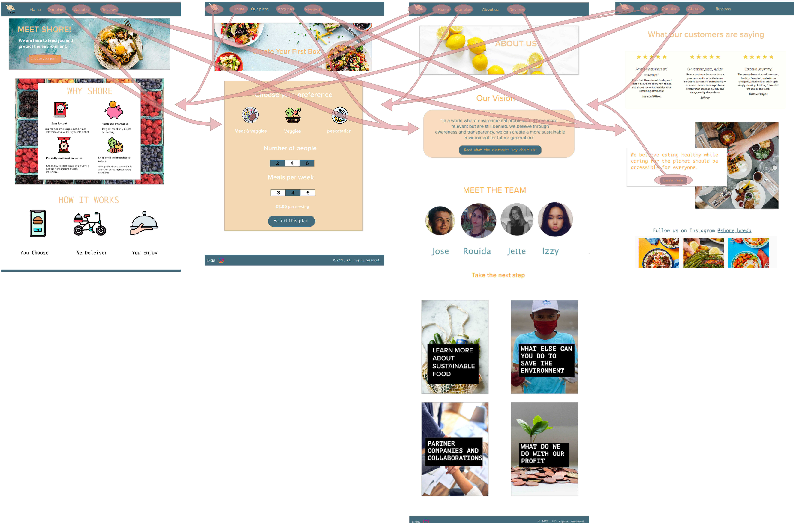

Congratulations, you have found the justification page of the groupwebsite "Shore" developed by Class 6, Group 4 for PRJ4.
This page contains the styleguide used to make the website of SHORE.
Color
This website uses two main colors: beige and blue, which originate from the logo. Baige, being close to orange, is complementary to blue and therefore offers a great contrast. Additionally, they represent the shore and the sea.
White is used as a base for the website and as font-background in pictures to increase readibility. It is a casual color to use on websites, but also represents purity, cleaness and a fresh start. Together with the sea, the beginning of life, the color-choice supports the brand mission and vision of a sustainable and clean future.
Font
The standard bootstrap font is used, since it is a generic and readable font.
Structure
The pages have a similar sturcture to appear coherent. At the top of the page, you can find a navigationbar, followed by a jumbotron with a fixed background image and a beige H1 heading announcing the content of the page. A white background was added to improve the readability of the headline on the colorful pictures.
This website offers the following 5 html pages:
- Landing page, also called "Home"
- Our Plans page, presenting our product
- About Us page, including the Who are we?, and links option
- Reviews page, including the Testemonials and Contact option
- hidden justification page
The pages strongly focus on visuals to appeal to the target group, while the text is kept to a minimum.
Testing
20 user tests were conducted, that have been made either in person or over whats-app using the following Adobe XD Prototype.
 Since the prototype was a high-fedility prototype, it is very similar to the final website. In general, very positive feedback was recieved.
After introducing the product, the following questions were asked:
- Find out what the product is
- sign up for a meal package
- Find the 4 people who are involved in this project
- Find the Brand Vision
Every participant managed to reach their goals within 1 minute and seemed to have no issue finding navigating around the prototype. Afterwards, constructive feedback was mentioned, which is stated in the following bulletpoints.
Feedback (constructive points)
- The background image behind the 'why shore' section has very high contrast, so it grabs the attention more than the text in the middle, consider using another image or make it more faded.
- There should be a possibility to order for only one person, since students often eat alone
- The contrast in the "order our plans page" was to dark on some numbers, so they looked already selected
- There should be a contact form for people who have questions
- Some of the font on top of the pictures is hard to read
- The font of the Logo is hard to read
- Adding FAQ section, and information about how they're keeping their couriers, customers, and food safe during the pandemic.
- Maybe offer a voucher, or a discount on first orders to encourage customers to try their service.
Feedback (positive)
- Easy to navigate
- I really like the blue color, it evokes emotions of tranquility and assurance. Also, love the logo and how it matches their brand name!
- Looks professional and is easy to understand
- simple and straight forward
- The visuals support the urge to order a plan
- Very simple to order food with just 3 clicks
- Smart links between pages for example on the landing page, directly to the product
- Loved the "What do we do with our profit", really includes people, and makes them feel involved in bettering our planet and environment.
Implementation
Based on the Feedback, we implemented the following points
- changed the picture in the Home page
- re-designed the logo
- added a contact-form on the Review's page
- added a visibility class to font on pictures
- left-out colors for the buttons of the Our Plans' page